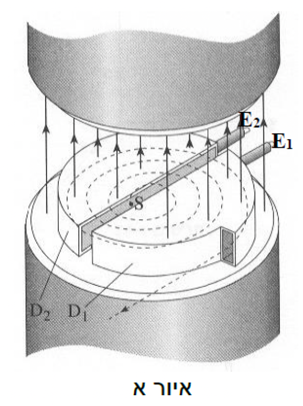
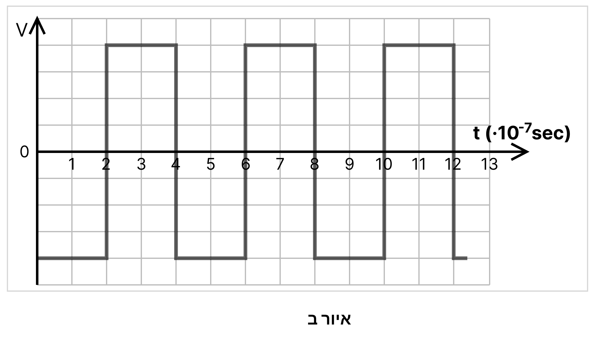

בעזרת הציקלוטרון שבאיור א מאיצים ממנוחה דֶּאוֹטֶרְיוּם. דֶּאוֹטֶרְיוּם הוא גרעין של איזוטופ מימן הכולל פרוטון אחד ונויטרון אחד (נקרא גם מימן כבד). מסת הדֶּאוֹטֶרְיוּם היא \(3.34 \cdot 10^{-27} kg\).
הציקלוטרון מורכב משני אזורים, \(D_1\) ו- \(D_2\) שבניהם מרווח קטן. ממקור \(S\), הנמצא במרכז הציקלוטרון, משוחרר דֶּאוֹטֶרְיוּם ממנוחה. הדֶּאוֹטֶרְיוּם מואץ בכל \(D\) ע"י שדה מגנטי אחיד \(B\), ומשלים בכל פעם מסלול שצורתו חצי מעגל (הקו המקווקו באיור א). אל הנקודות \(E_1\) ו- \(E_2\) של הציקלוטרון מחובר מקור מתח חילופין, אשר מגדיל את מהירות הדֶּאוֹטֶרְיוּם בכל פעם בו הוא עובר בין ה-\(D\)-ים. באיור ב גרף המתאר את מתח המקור כתלות בזמן. הרגע \(t=0\) בגרף אינו הרגע בו הדֶּאוֹטֶרְיוּם נפלט מהמקור \(S\).
נתון כי הדֶּאוֹטֶרְיוּם נפלט מהציקלוטרון עם אנרגיה מרבית של \(1.5 \cdot 10^{6}eV\) , לאחר שהשלים \(400\) סיבובים מלאים. ( \(1ev=1.6 \cdot 10^{-19} J\))


א.(1) הוכיחו שמשך הזמן שלוקח לדֶּאוֹטֶרְיוּם להשלים מסלול אחד בכל \(D\) (חצי מעגל) אינו תלוי בגודל מהירותו וברדיוס התנועה שלו. (\(5\) נקודות)
(2)כמה זמן לוקח לדֶּאוֹטֶרְיוּם להשלים מחזור תנועה מלא אחד, כלומר השלמת מעגל שלם? הסבירו כיצד קבעתם זאת. ניתן להזניח את משך זמן תנועתו בין שני ה-\(D\). (\(5\) נקודות)
ב.חשבו את עוצמת השדה המגנטי בציקלוטרון. (\(4\) נקודות)
ג.חשבו את הקוטר של הציקלוטרון. (\(6\) נקודות)
ד.(1) חשבו את תוספת האנרגיה שניתנה לדֶּאוֹטֶרְיוּם בכל מעבר בין ה-\(D\) וציינו מהו המקור
לאנרגיה זו. (\(3\frac{1}{3}\) נקודות)
(2)חשבו את ערך המתח המירבי שמספק מקור המתח. (\(4\) נקודות)
ה.אילו ערך המתח המירבי של מקור המתח היה שונה, קבעו ונמקו האם היה חל שינוי בכל אחד מהבאים:
(1)המהירות המרבית איתה נפלט הדֶּאוֹטֶרְיוּם מהציקלוטרון. (\(3\) נקודות)
(2)מספר הסיבובים שהיה מבצע הדֶּאוֹטֶרְיוּם עד ליציאתו מהציקלוטרון. (\(3\) נקודות)